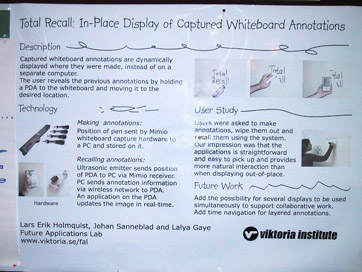
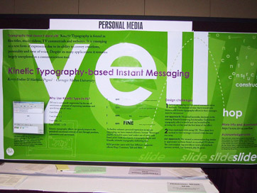
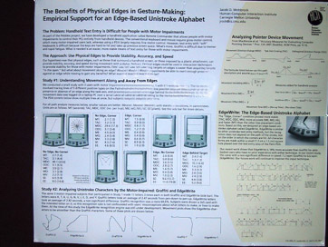
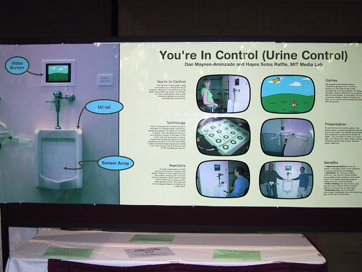
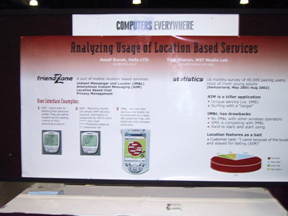
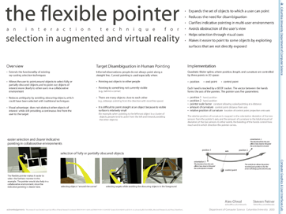

Poster Example Gallery (mirrored from here)
There are many ways to make a great poster. To
provide some inspiration, here are some posters we saw
at CHI 2003 and UIST 2003 and that we liked. Click on the pictures to enlarge. More poster guides can be found all over the web .
|
 |
we liked:
large title that summarizes poster
great for impatient attendants.
a
walk-though in pictures
the image sequence in the top right
summarizes the proposed technique. The user
draws with a special pen, and after erasing the
content, the content can be brought back by
sweeping the PDA across the surface. This poster
is also
interactive . |
|
|
|
 |
we liked:
self-referential layout
the poster is an example for its own content,
i.e. kinetic typography. This way the poster
surface is exploited twice.
great attention-grabber, too. |
|
|
|
 |
we liked:
headings that summarize their sections
glancing over these headings ("The
Approach: Use Physical Edges to provide
Stability, Accuracy, and Speed") tells impatient
attendants the most relevant content. This is
much more effective than generic titles or
headings asking a question. It makes a separate
abstract obsolete.
limited clutter, despite a lot of information
although it holds more information than
the other posters on this example page, this
poster successfully avoids being visually
overpowering. It does this by mixing text and
graphics, using few and simple colors, and
working with white space instead of boxes.
has complete "elevator pitch"
this poster describes who has the problem
(people with motor disabilities), what these
people are try to use (pen-based PDAs), why
existing techniques do not work (Graffiti
requires fine motor control), proposes a novel
solution, and shows how the authors have
shown/will show that the proposed technique
solves the problem. |
|
|
|
 |
we liked:
one-picture summary
the huge image on the left shows the
installation and gives an immediate idea of the
topic.
spoon feeding
the six blocks are self-contained, thus
attendants can read in almost any order. This
poster avoids clutter by separating individual
blocks with white space. |
|
|
|
 |
we liked:
bullets instead of paragraphs
all bullets are very short, making it easy for
attendants to find the facts they care about.
selective stats
the statistics section at the right is brief and
limited to the most relevant results, rather
than, say, a complete table. All additional
stats are outsourced to a flyer. |
| |
|
|
 |
we liked:
says what is novel about it
there is prior art, so the poster
acknowledges it ("extents the functionality of
existing ray-casting techniques") and makes
clear which part is novel (the ability to point
around a corner).
extended abstract
here is the
extended abstract for this poster
. Here is
another one . Both start with abstracts that
very clearly state user, problem, solution, and
novelty/contribution. |
Questions? Send email to Patrick Baudisch
baudisch[at]microsoft.com, Microsoft Research
Created March, 2003, by
Patrick Baudisch, with contributions from Eric Lecolinet
Last updated January, 2005
|
{kind=link}
{kind=link}
{kind=link}
{kind=link}
{kind=link}
{kind=link}
{kind=link}